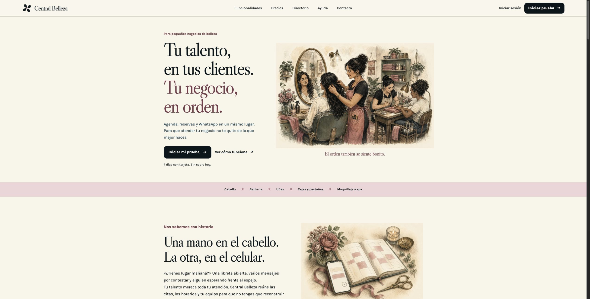
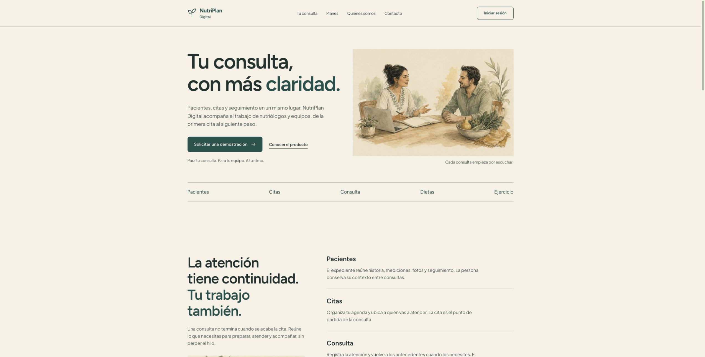

De un proyecto al siguiente
Elige un proyecto para ver cómo cambia el catálogo.
Estudio de movimiento
Central Belleza
Mi rol: dirección de producto, frontend, backend y entrega.


Capturas reales · 16 de septiembre de 2026
Proyecto actual: Central Belleza